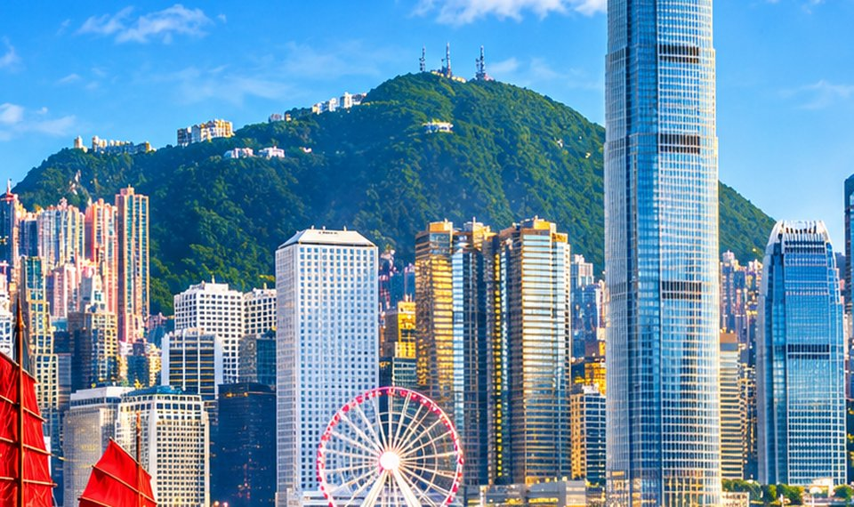

جزيرة هونغ كونغ Hong Kong Island · 香港島
سنترال وكوزواي باي، التسوق والمطاعم والمعالم
116 موقعًا في الدليل10 مناطق فرعية
🔎 البحث في جميع الأحياء والتصنيفات
تم توسيع الدليل ليشمل أحياء إضافية؛ بعض بيانات الأماكن تحتاج تأكيد التشغيل قبل الزيارة. عروض الإضاءة موسمية وتتغير مواعيدها؛ راجع الرابط الرسمي.